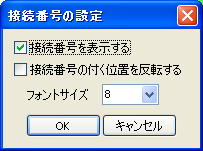
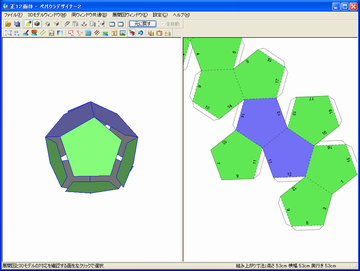
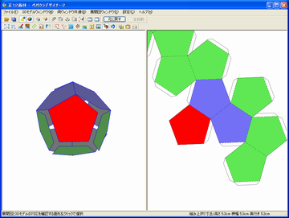

Pepakura Designerには、実際に工作するときに使用すると便利な機能があります。これらを使用する事で組み立ての作業がスムーズに進むことでしょう。
[設定]-[接続番号の設定]から[接続番号を表示する]を選ぶと、辺に番号が割り振られます。この番号を参考にして、同じ番号同士を貼り合わせることで複雑な展開図でも間違えることなく工作を進めることができます。

[接続番号の設定]ダイアログ

接続番号を表示している様子
展開図を編集していると、編集中の部位が3Dモデルのどの場所に当たるのかわからなくなることが良くあります。そのような場合には[展開図ウィンドウ]-[編集モード](又は右クリックメニュー)から[対応する面の確認]を選び、確認したい面をクリックします。対応する面同士が赤く表示されます。
3Dモデル側で確認したい面を選ぶ事もできます。

対応する面同士が赤く表示されます